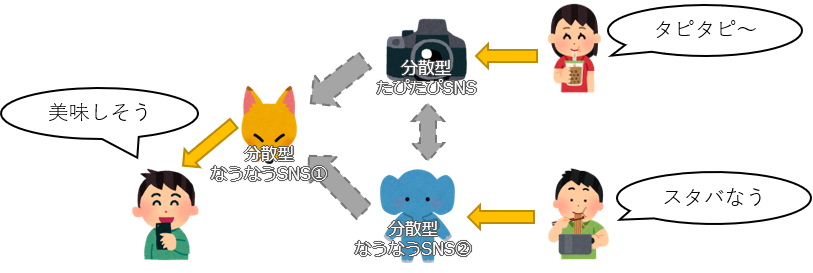
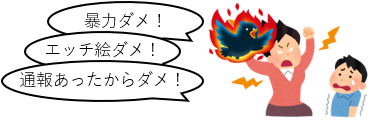

分散SNSアドベントカレンダー 1日目「分散SNS入門」
これは 分散SNS Advent Calendar 2019 1日目の記事です。
一日目の記事ということで、分散SNSを全く知らない人向けに「分散SNSとはなんぞや」「普通のSNSと何が違うのか」「様々な分散SNSについて」といった内容で紹介記事とさせていただきます。
分散SNSのことをあまり知らない人、普段から使って入るけどあまり広範囲で把握していない人の目に留まってもらえれば幸いです。
分散SNSについて
この項では分散SNSとはどういうものか。一部のインターネットユーザから支持を得られている理由。などを解説していきます。
文章量が思ったよりも長くなってしまったので、最初に概要を箇条書きにしておきます。知ってるよって人は飛ばして次の項に行ってしまいましょう。
- 分散SNSとは世界中のサーバ同士がメッセージをやり取りするSNSである
- 分散SNSには不特定多数の管理者が存在する
- そのためユーザは管理者のルールに縛られることはない
分散SNS #とは
分散SNSとは、ソーシャルネットワークサービスの一つで、世界中のサーバごとに個別に構築されており各サーバ間でメッセージのやり取りを行うことができるもののことを指します。
簡潔に言うとそんな感じなのですが、これだけではいまいちイメージがしにくいかもしれません。
例として、TwitterやFacebookなど、あなたが利用したことのあるSNSをイメージしてください。
あなたが他のユーザの投稿を見るときには、その人が登録しているサービスにアクセスするでしょう。
分散SNSでは、他のサービスに登録しているユーザの投稿を見れるように、SNS同士で通信を行って情報をもらってきます。
このSNSはどこかの企業によって作られているものではなく、一般の人たちが立ち上げたサービスであり、世界中の様々な場所に設置されています。

SNSにとって大切なこと
先に述べたとおり分散SNSは一般の人達によって構築されているSNSシステムです。つまり簡単に言ってしまえば SNSの数だけ管理者が存在します
この不特定多数の管理者が存在するということが、分散SNS利用者に大きなメリットを与えてくれます。
SNSの管理者は、サーバを動かしたり落ちないように監視したり、ユーザからの問い合わせに対処したりといったことを行います。
そして何より、より多くの人に使ってもらうために ユーザ同士が楽しくコミュニケーションを取れる環境を整備すること が大切なお仕事です。
ユーザの主張を守るための仕組み
前述の「SNSの数だけ管理者が存在する」ということがユーザが快適にSNSを楽しめる環境を作ることにつながっています。
例えばTwitterで度々話題になる アカウント凍結問題 を挙げて説明します。
Twitterにおけるアカウント利用停止の基準は(いまは改善されているかもしれませんが)とても機械的です。過去に「死ね」や「殺す」などの暴力的発言があり、他のユーザからの通報を受けると利用停止となり、アカウント凍結と呼ばれる状態になる事例もあるそうです。仮に「蚊を殺した」などであってもアウトとなってしまうこともあるようです。
また、テキストメッセージだけでなく、イラストなどの画像データに対しても、似たように規制をかけられることがあります。
この規制をかけるTwitter社の判断が、すべての国民から「やってはいけないこと」と思われているものであれば、それは正しいことかもしれません。しかし、日本のルールとして、法として特に規制をかけていない以上は表現をしたい人は表現をする権利を保証してもらうべきです。「いち企業が規制できるものではない」と訴えている人たちが少なからず存在します。

「ならTwitterなんてやらなければいいじゃん」という主張にもつながるでしょう。そのとおりです。
そういった意見の中から、「企業のルールに縛られないSNS」として、分散SNSは一部のインターネットユーザから強い支持を集めています。
分散していても「つながれる」仕組みの大切さ
特定企業のルールに縛られたくないユーザは、代替の縛られないサービスに移行することになります。
この際に重要になってくるのは「好きなアクティブユーザ」がサービス内に存在するか否かにかかってきます。
SNSに限らず、例えば5ch (旧2ch) のような掲示板サイトにおいても、コミュニティサービスの基本となるのはそこを利用するユーザです。
そのサービスを利用しているユーザがいない場合、もしくはいても面白くない書き込みばかりしている場合はそのサービスを利用して発信したいと思うことはなかなかないでしょう。
今までも現存するSNSを模倣したサービス(クローンサービスといいます)は開発されてきましたが、ほとんど日の目をみることもなく消えていきました。システムにばかり目を向けてしまい、先にも述べたようなアクティブユーザ数についてあまり考慮していなかったことが原因です。
誰も使わなければSNSは廃れる。
それを分散SNSでは、連合(Federation) という機能で解消しています。
連合とは、分散SNS同士でデータを発信しあい、他の分散SNSで投稿されたメッセージを見ることができる機能です。
これによって例え登録ユーザ数が数人しかいないようなサービスであっても、分散SNSのネットワークに繋がることによって、数万人が登録しているサービスのように利用することができます。
分散SNSのデメリット
これまで分散SNSのメリットについて紹介してきましたが、当然デメリットも存在します。
初めに分散SNSは不特定多数の管理者が存在すると書きました。これは分散SNSを立ち上げるための知識があれば、専門的にサーバを扱っているプロから夏休みの自由研究の題材にしようとしてる小学生まで、様々な人が自由に新しいサービスを立ち上げられるということになります。
これは自由なサービスを運営するためにはとても素晴らしいことなのですが、そのために2つの問題が生じてしまいます。
まず1つは技術的な問題。
誰でも立ち上げることのできる分散SNSは、個人で運用しているものがほとんどです。そのため、管理者の技術力によってそのサービスの品質に大きな差が生じています。
技術力のある管理者であれば、サービスが止まることはほとんど無く、安定したものになります。逆に技術力のない管理者の場合、サービスの停止、データの消失、情報漏洩などに対処しきれないこともあります。
もう1つは思想的な問題。
企業の思想に囚われたくないユーザが立ち上げた分散SNSであっても、ただ企業の思想から外れただけで、管理者自身の思想に囚われてしまっているサービスも多数存在します。そういったサービスの場合、管理者の意に沿わない書き込みを見られた場合に不快感を示される可能性もあります。
安定した分散SNS、または管理者の主観に囚われないサービスに登録するには。。。
などについては当記事では解説しません。他の分散SNS記事を読んでいただければオススメのサーバー紹介等があると思いますので色々と探してみるといいでしょう。
様々な分散SNSの紹介
ここからは、現在開発が進められている様々な分散SNSを紹介していきます。
基本的には、オープンソース（自由に利用や配布などをすることができるソフトの分類）で開発されており、管理者はそれらのシステムを利用して構築しています。そのため、分散SNSといってもその種類は大まかに分類されます。
どのようなサービスが存在するのか。
分散SNSプロトコルの種類
分散SNSを知る上で、プロトコルの種類を知る必要があります。
プロトコルとは、分散SNS間でメッセージのやり取りをする際のルールのようなものです。
例えばあなたが他人と会話をするとき、「こんにちは」と挨拶を交わして会話を始めるかと思いますが、これはお互いが「日本語で会話する」というプロトコルを理解しているから出来ることです。これと同様に、分散SNSにおいても「〇〇語で会話する」に該当するプロトコルが複数存在します。以下にメジャーな分散SNSプロトコルについて紹介していきたいと思います。
- ActivityPub
W3Cによって標準化された分散SNSプロトコル。
標準化されたことにより様々な分散SNSシステムで積極的に採用されており、おそらく現在一番利用者が多いプロトコルの一つ。 - Diaspora
Facebookライクなサービス向けに策定されている分散SNSプロトコル。
プロトコル名を冠した分散SNS「Diaspora*」が中心になって開発されており、同プロトコルを採用しているサービスも多数存在する。 - OStatus
Twitterのようなミニブログサービス向けに策定された分散SNSプロトコル。
以前は積極的に採用されていたが、明確な仕様を記載したドキュメントが存在しないため、現在ではActivityPubに移行するサービスが多い。 - Matrix
IRCやSlackのようなチャットベースの分散SNSとして開発されているプロトコル。
採用している分散SNSサービスは殆どないが、Matrix.orgが中心となり積極的に開発しており十分な機能を持つプロトコルと言える。
分散SNSによって採用されているプロトコルが異なるため、分散SNSを利用する際にはどのプロトコルが使われているかを理解しておくことが大事になってきます。
分散SNSシステムの種類
上記プロトコルを採用した分散SNSシステムの中で、日本で認知度の高いものを紹介します。これらの分散SNSシステムをベースとして、サービスを運用しているところがほとんどです。
ミニブログ(Twitter)系
- Mastodon
ActivityPubを採用しているTwitterクローン系分散SNS。
従来のTwitterが実装していた機能を多く搭載しており、加えてカスタム絵文字などの分散SNSならではの機能も多く実装されている。
2016年12月頃から開発が始まり、日本では2017年4月に大きなブームが巻き起こった。そのためにMastodonサーバ及びユーザ数は分散SNSの中でもかなり大きい。 - Pleroma
ActivityPub及びOStatusを採用しているMastodonクローン系分散SNS。
軽量で安定したシステムを意識して開発されており、APIはMastodonと一定の互換性を保っているため一部を覗いてMastodon用に開発されたクライアントアプリが利用できる。 - Misskey
ActivityPubを採用しているミニブログ系分散SNS
Twitterのような見た目ではあるが、Mastodonのように完全に似せるわけでもなく、独自に様々な機能を盛り込んだシステムを構築している。
日本人が開発しており、ユーザも日本人が多い。 - Dolphin
ActivityPubを採用しているミニブログ系分散SNS
Misskeyの開発者が開発しており、機能が豊富なMisskeyに対して基本的な機能だけに削った軽量なシステムを構築している。 - GNUSocial
OStatusを採用しているミニブログ系分散SNS
分散SNSの中でも歴史は古く、MastodonもGNUSocialの流れを組んで派生している。
開発はかなり落ち着いてきているが、依然として利用しているユーザも一定数存在する。
Facebook系
- Diaspora*
Diasporaプロトコルを採用しているFacebook系分散SNS
独自のプロトコルを採用しているが、他の分散SNSにも同プロトコルを採用しているものは多い。
日本ではあまり利用者はいないが、海外に多くユーザがいる。 - Hubzilla
Diaspora及びZotプロトコルを採用しているFacebook系分散SNS
プラグイン方式を採用しており、ActivityPubプラグインを導入することによりMastodonやMisskeyのユーザともメッセージのやり取りをすることが可能になる。
ZotプロトコルというユーザIDの分散システムを採用することにより、一つのアカウントで複数のサービスに登録することが可能になる。 - Friendica
DiasporaやActivityPubを採用しているFacebook系分散SNS
ブログ系
- WriteFreely (Write.as)
ActivityPubを採用しているブログ系分散SNS
有料プランの存在するWrite.asのコア部分をオープンソース化したものがWriteFreely
シンプルで軽量。ActivityPubへ発信をするだけのサービス
チャット系
- Matrix
Matrixを採用しているチャット系分散SNS
SlackやDiscordのような仕組みとなっている。
マルチメディア系
- PixelFed
ActivityPubを採用しているインスタグラム系分散SNS - PeerTube
ActivityPubを採用しているYouTube系分散SNS
終わりに
長々とした分散SNSの紹介でしたが、どういうものか多少の手助けになることはできたでしょうか。
当記事では俯瞰的な内容しか紹介しませんでした。
実際に様々な分散SNS内で起きている出来事については今回の 分散SNS Advent Calendar 2019 でそれぞれの執筆者が紹介してくれることでしょう。
ぜひともいろいろな人の記事を読んで分散SNSの楽しさを味わってみてください。
そして興味深い記事があれば、お好きな分散SNSサービスに登録して、その人をフォローしてみましょう。
以上で分散SNSアドベントカレンダー1日目の記事を終わります。
明日はケイゾウさんの記事です。